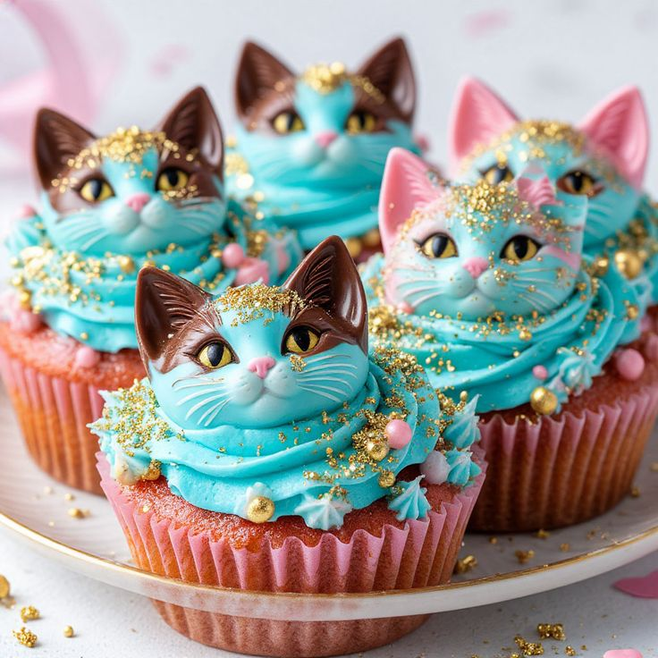
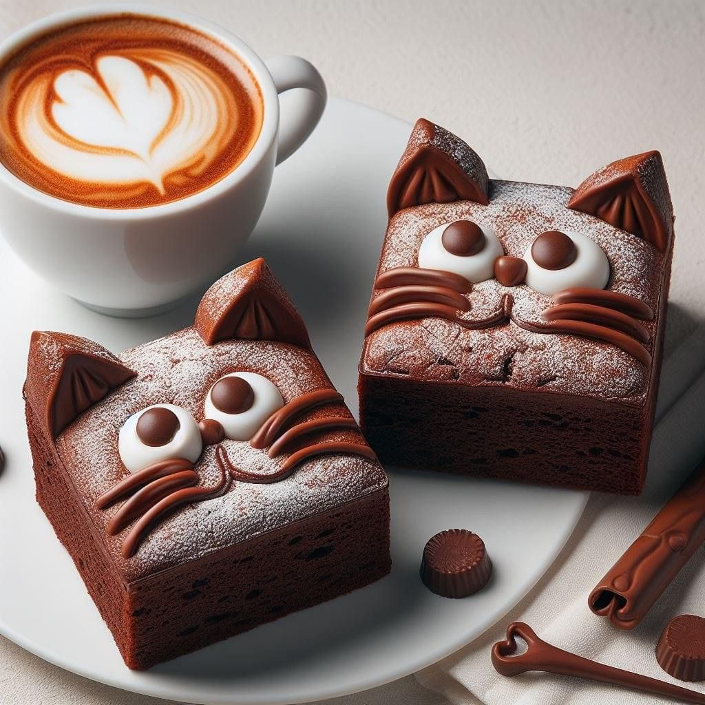
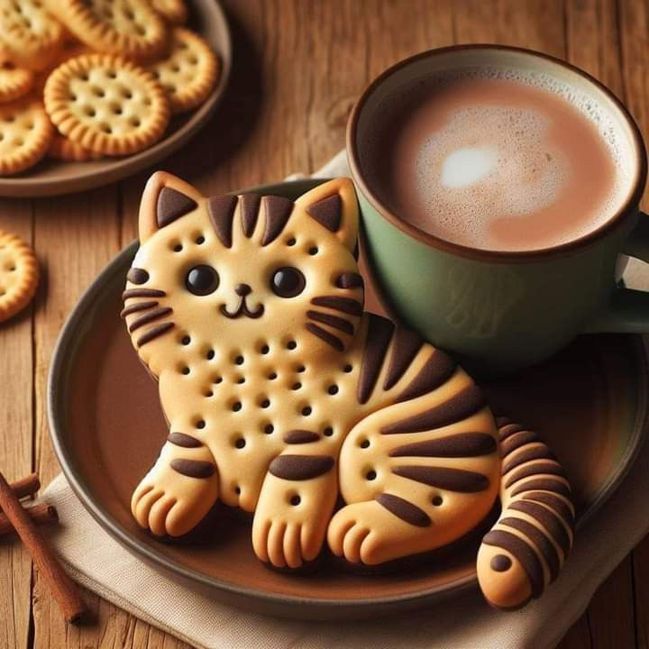
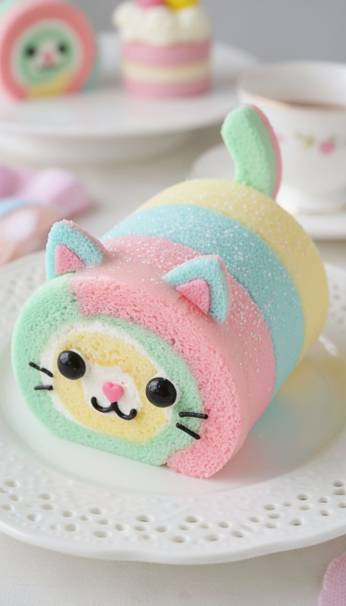

Les Cupcakes Rétro
Glaçage couleur bonbon, paillettes comestibles, saveurs inspirées des années 50. Chaque cupcake est une petite fête dans la bouche, une célébration sucrée de l'amour des chats.
Chaque bouchée raconte une histoire. Chaque achat soutient nos chats.
Notre pâtisserie maison est le moteur économique du Repaire. Fabriquées sur place avec passion, ces créations sucrées sont bien plus que des gourmandises : ce sont des actes de solidarité. En savourant une pâtisserie du Repaire, vous nourrissez aussi nos moustachus.

Glaçage couleur bonbon, paillettes comestibles, saveurs inspirées des années 50. Chaque cupcake est une petite fête dans la bouche, une célébration sucrée de l'amour des chats.

Nommés ainsi car ils sont aussi doux que Velours lui-même. Chocolat noir intense, cœur fondant, recette gardée secrète par notre pâtissière adorée.

Noisette, caramel et une touche de sel. Poétiques et mystérieuses comme leur homonyme, ces cookies sont la madeleine rétro du Repaire.

Éclairs, tartes, macarons... Chaque mois, notre équipe crée une nouvelle gourmandise. À vous de découvrir et de voter pour votre préférée !